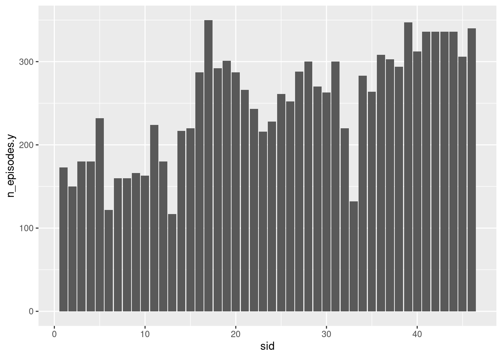

Code
library(tidyverse)
library(ggplot2)
library(here)
knitr::opts_chunk$set(echo = TRUE, warning=FALSE, message=FALSE)Daniel Manning
January 22, 2023
I have chosen the “snl_seasons” dataset and the “snl_casts” dataset. The seasons dataset has information about each season of SNL including its year, first and last episode dates, and number of episodes. THe casts dataset has information about each of the cast members of SNL, including actor/actress name, season ID, first and last episode they appeared in, number of episodes they appeared in, and the fraction of the season they appeared in.
# A tibble: 46 × 5
sid year first_epid last_epid n_episodes
<dbl> <dbl> <dbl> <dbl> <dbl>
1 1 1975 19751011 19760731 24
2 2 1976 19760918 19770521 22
3 3 1977 19770924 19780520 20
4 4 1978 19781007 19790526 20
5 5 1979 19791013 19800524 20
6 6 1980 19801115 19810411 13
7 7 1981 19811003 19820522 20
8 8 1982 19820925 19830514 20
9 9 1983 19831008 19840512 19
10 10 1984 19841006 19850413 17
# … with 36 more rows sid year first_epid last_epid
Min. : 1.00 Min. :1975 Min. :19751011 Min. :19760731
1st Qu.:12.25 1st Qu.:1986 1st Qu.:19863512 1st Qu.:19872949
Median :23.50 Median :1998 Median :19975926 Median :19985512
Mean :23.50 Mean :1998 Mean :19975965 Mean :19985509
3rd Qu.:34.75 3rd Qu.:2009 3rd Qu.:20088423 3rd Qu.:20098015
Max. :46.00 Max. :2020 Max. :20201003 Max. :20210410
n_episodes
Min. :12.0
1st Qu.:20.0
Median :20.0
Mean :19.7
3rd Qu.:21.0
Max. :24.0 # A tibble: 614 × 8
aid sid featured first_epid last_epid update…¹ n_epi…² seaso…³
<chr> <dbl> <lgl> <dbl> <dbl> <lgl> <dbl> <dbl>
1 A. Whitney Brown 11 TRUE 19860222 NA FALSE 8 0.444
2 A. Whitney Brown 12 TRUE NA NA FALSE 20 1
3 A. Whitney Brown 13 TRUE NA NA FALSE 13 1
4 A. Whitney Brown 14 TRUE NA NA FALSE 20 1
5 A. Whitney Brown 15 TRUE NA NA FALSE 20 1
6 A. Whitney Brown 16 TRUE NA NA FALSE 20 1
7 Alan Zweibel 5 TRUE 19800409 NA FALSE 5 0.25
8 Sasheer Zamata 39 TRUE 20140118 NA FALSE 11 0.524
9 Sasheer Zamata 40 TRUE NA NA FALSE 21 1
10 Sasheer Zamata 41 FALSE NA NA FALSE 21 1
# … with 604 more rows, and abbreviated variable names ¹update_anchor,
# ²n_episodes, ³season_fraction aid sid featured first_epid
Length:614 Min. : 1.00 Mode :logical Min. :19770115
Class :character 1st Qu.:15.00 FALSE:451 1st Qu.:19801215
Mode :character Median :26.00 TRUE :163 Median :19901110
Mean :25.47 Mean :19909634
3rd Qu.:37.00 3rd Qu.:19957839
Max. :46.00 Max. :20141025
NA's :564
last_epid update_anchor n_episodes season_fraction
Min. :19751011 Mode :logical Min. : 1.00 Min. :0.04167
1st Qu.:19850112 FALSE:541 1st Qu.:19.00 1st Qu.:1.00000
Median :19950225 TRUE :73 Median :20.00 Median :1.00000
Mean :19944038 Mean :18.73 Mean :0.94827
3rd Qu.:20040117 3rd Qu.:21.00 3rd Qu.:1.00000
Max. :20140201 Max. :24.00 Max. :1.00000
NA's :597 # A tibble: 614 × 12
sid year first_epi…¹ last_…² n_epi…³ aid featu…⁴ first…⁵ last_…⁶ updat…⁷
<dbl> <dbl> <dbl> <dbl> <dbl> <chr> <lgl> <dbl> <dbl> <lgl>
1 1 1975 19751011 1.98e7 24 Gild… FALSE NA NA FALSE
2 1 1975 19751011 1.98e7 24 Mich… FALSE NA 1.98e7 FALSE
3 1 1975 19751011 1.98e7 24 Lara… FALSE NA NA FALSE
4 1 1975 19751011 1.98e7 24 Garr… FALSE NA NA FALSE
5 1 1975 19751011 1.98e7 24 Jane… FALSE NA NA FALSE
6 1 1975 19751011 1.98e7 24 Geor… FALSE NA 1.98e7 FALSE
7 1 1975 19751011 1.98e7 24 Chev… FALSE NA NA TRUE
8 1 1975 19751011 1.98e7 24 John… FALSE NA NA FALSE
9 1 1975 19751011 1.98e7 24 Dan … FALSE NA NA FALSE
10 2 1976 19760918 1.98e7 22 Gild… FALSE NA NA FALSE
# … with 604 more rows, 2 more variables: n_episodes.y <dbl>,
# season_fraction <dbl>, and abbreviated variable names ¹first_epid.x,
# ²last_epid.x, ³n_episodes.x, ⁴featured, ⁵first_epid.y, ⁶last_epid.y,
# ⁷update_anchor
$x
[1] "Season Number"
$y
[1] "Total Number of Episodes Cast Members Appeared In"
$title
[1] "Total Number of Episodes Cast Members Appeared In for Each Season"
attr(,"class")
[1] "labels"---
title: "Challenge 8"
author: "Daniel Manning"
description: "Visualization in Multiple Dimensions"
date: "1/22/2023"
format:
html:
toc: true
code-fold: true
code-copy: true
code-tools: true
categories:
- challenge_8
---
```{r}
#| label: setup
#| warning: false
#| message: false
library(tidyverse)
library(ggplot2)
library(here)
knitr::opts_chunk$set(echo = TRUE, warning=FALSE, message=FALSE)
```
## Read in datasets and describe them
I have chosen the "snl_seasons" dataset and the "snl_casts" dataset. The seasons dataset has information about each season of SNL including its year, first and last episode dates, and number of episodes. THe casts dataset has information about each of the cast members of SNL, including actor/actress name, season ID, first and last episode they appeared in, number of episodes they appeared in, and the fraction of the season they appeared in.
```{r}
seasons <- here("posts","_data","snl_seasons.csv")%>%
read_csv()
casts <- here("posts","_data","snl_casts.csv")%>%
read_csv()
seasons
summary(seasons)
casts
summary(casts)
```
## Joining datasets
```{r}
snl_join <- left_join(seasons, casts, by = "sid" )
snl_join
```
## Analyzing Joined Dataset
```{r}
snl_join %>%
ggplot(aes(x = sid, y = n_episodes.y)) +
geom_bar(stat = "identity")
labs(x = "Season Number", y = "Total Number of Episodes Cast Members Appeared In", title = "Total Number of Episodes Cast Members Appeared In for Each Season")
```